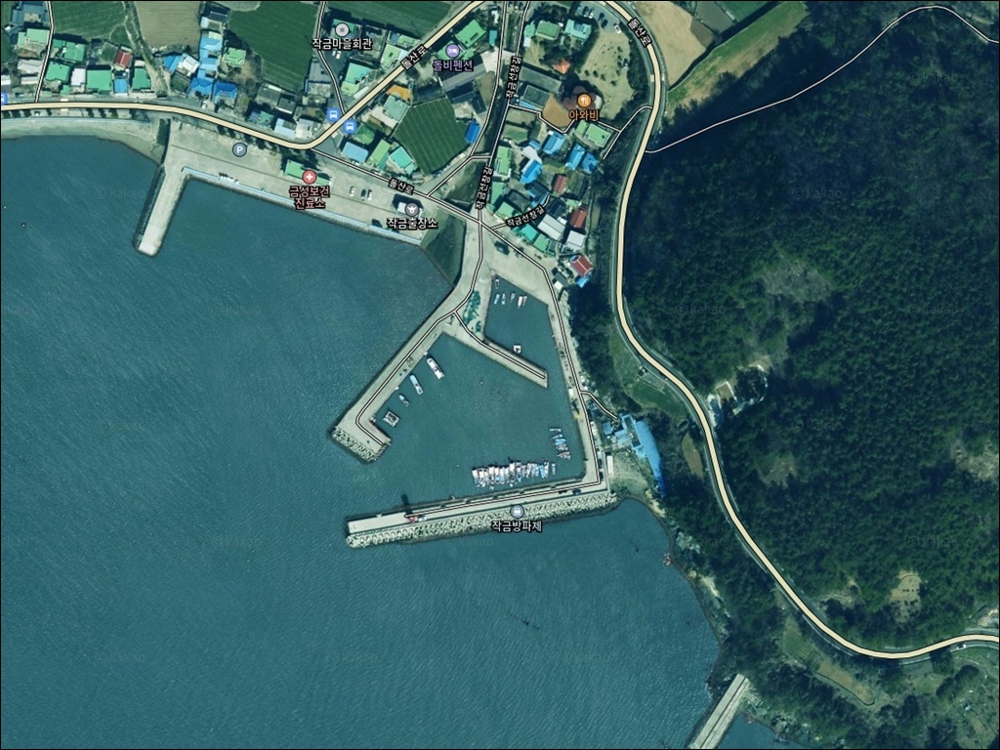
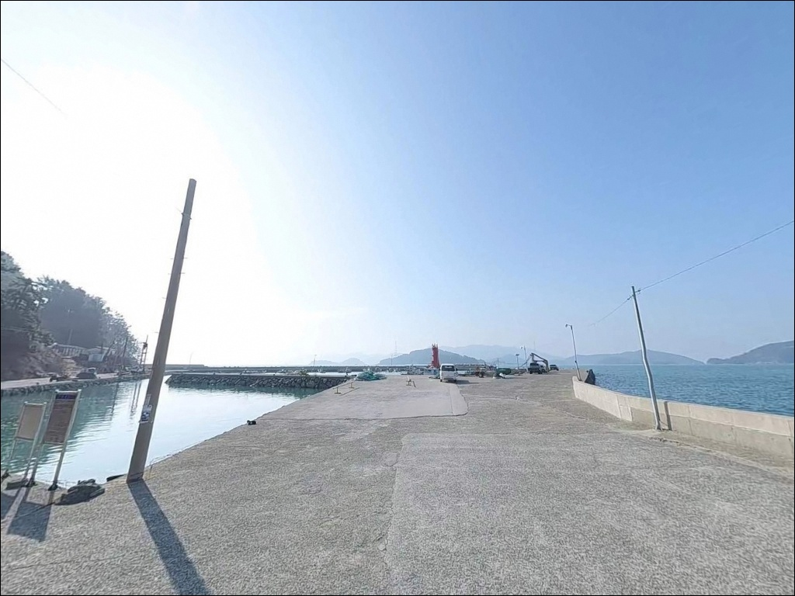
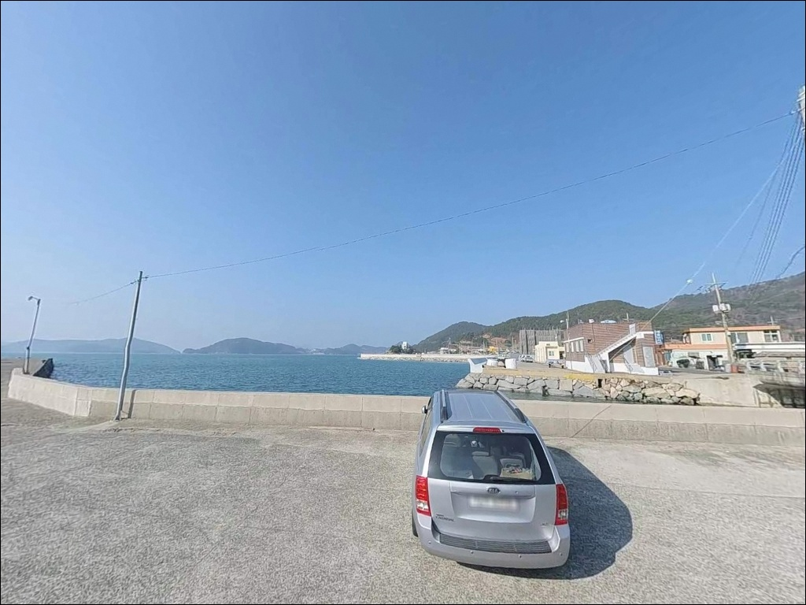
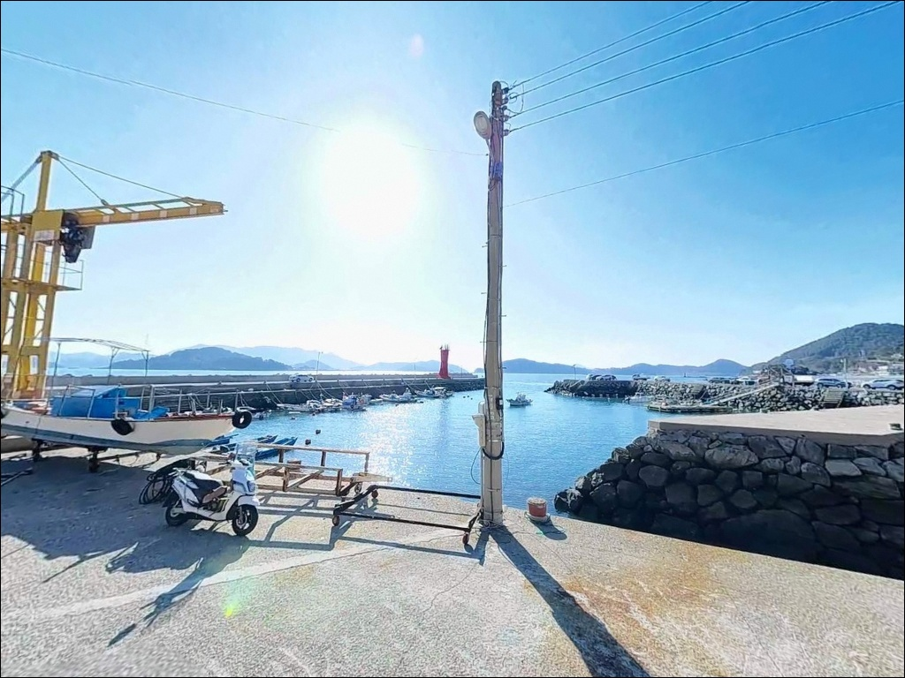
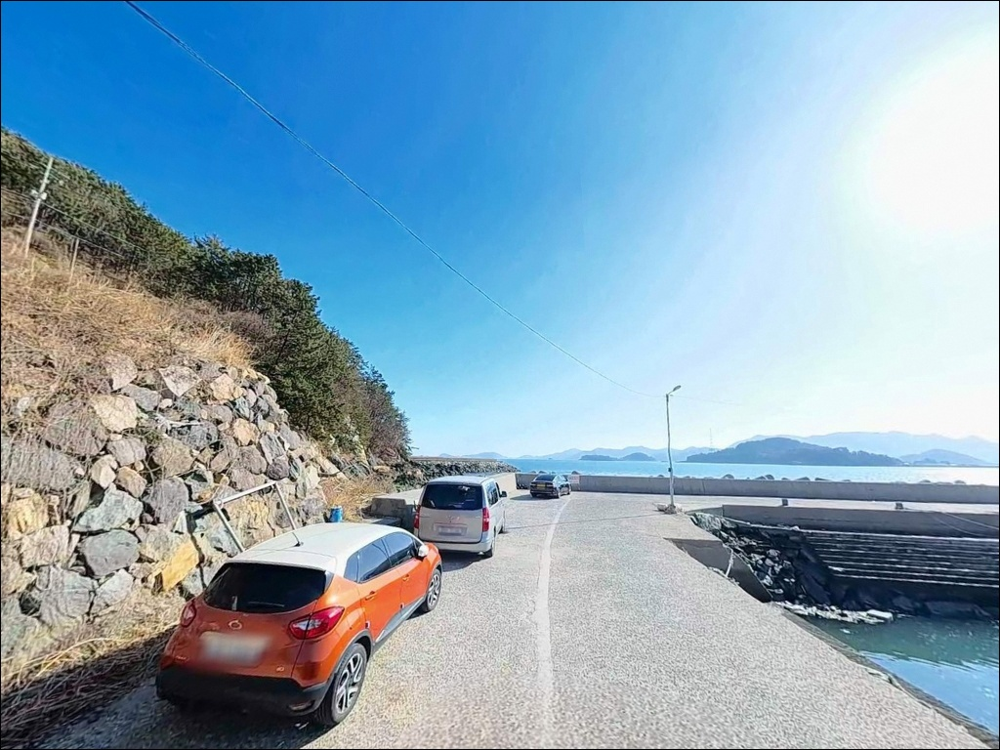
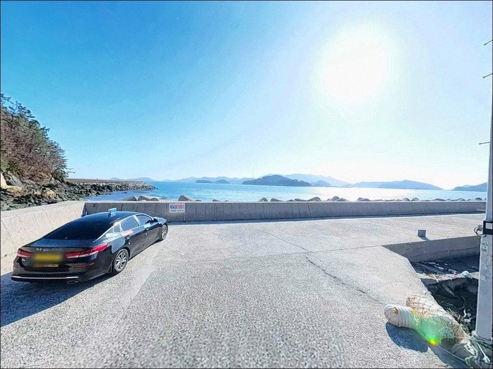
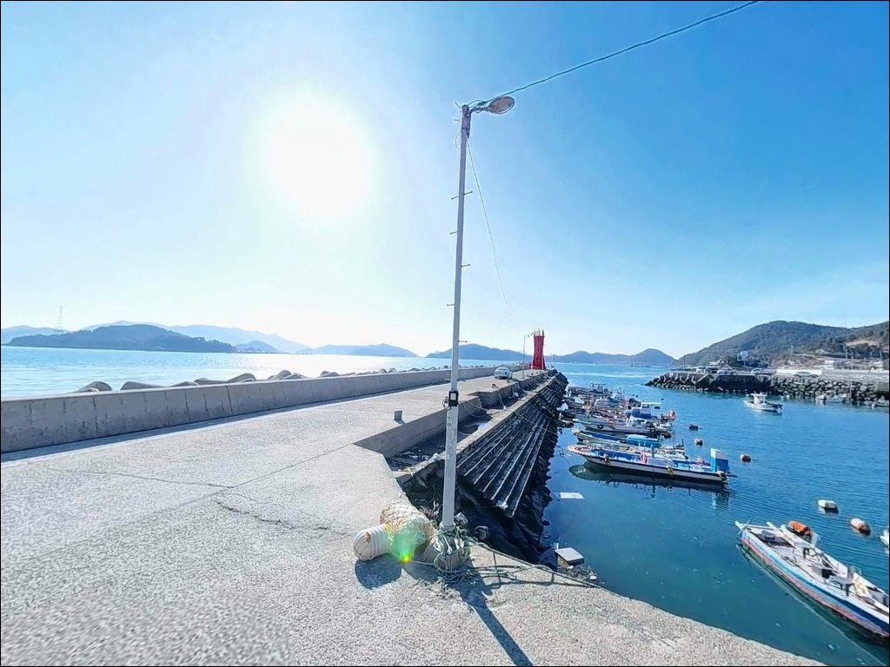
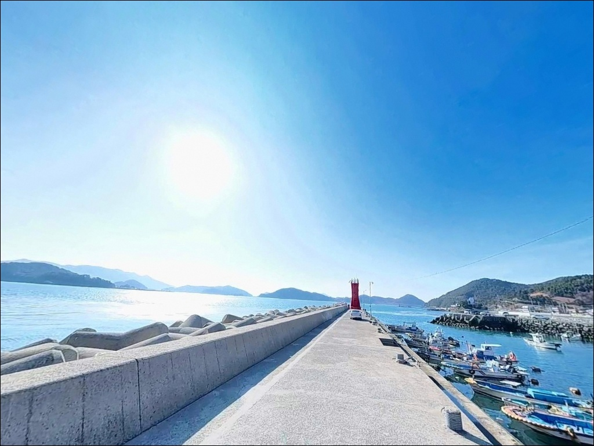
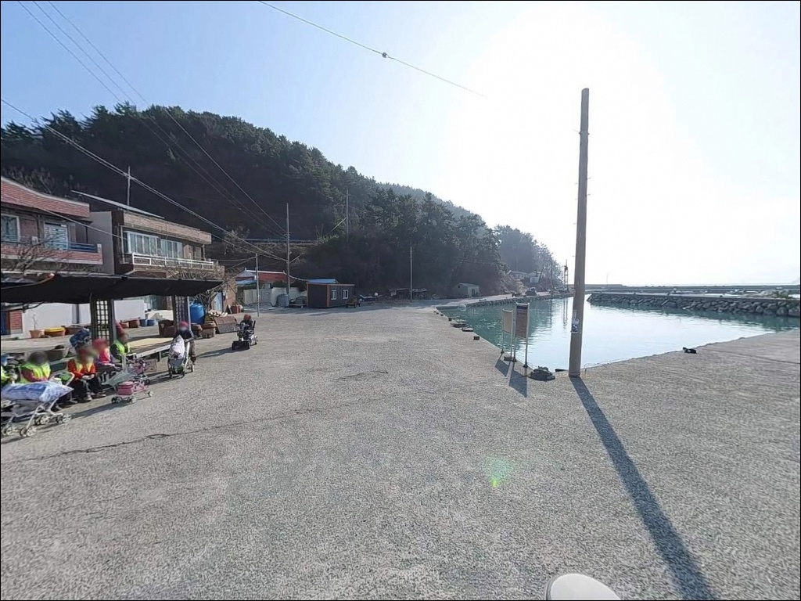

여수 작금방파제 릴찌낚시, 들물 초반 수심 10m 급변 지점에서 터진 입질


포인트 안내
작금방파제
전남 여수시 돌산읍 금성리 427-2
작금방파제에서 가장 많이 틀리는 판단은
물때 없이 꺾임 끝단에 자리를 잡는 것입니다.
들물 초반 타이밍에 조류가 살아 있어야
이 포인트 구조가 제 역할을 하는데,
사리 전후 외항 쪽 조류가 강하게 흐르는 시간대에
채비를 흘리면
입질 타이밍을 그대로 흘려보내는 결과로 이어집니다.
이 글은 작금방파제의
진입 동선·주차 여건·차박 환경,
지형 구조와 낚시 방식별 공략 조건에 집중합니다.
조황 단정과 특정 어종 보장은
이 글의 범위에 포함되지 않습니다.

1. 진입 동선과 차량 접근 여건
돌산대교를 건너 남쪽 해안도로를 따라
약 18~20km 이동하면 금성리 작금마을에 닿습니다.
전 구간 포장 도로이며 비포장 구간은 없어
일반 승용차 기준으로 진입에 큰 어려움은 없습니다.
다만 마을 내부 일부 구간에서
도로 폭이 좁아지는 구간이 섞여 있어
대형 SUV나 루프탑 텐트 장착 차량이라면
출발 전 위성지도로 진입로를 먼저 확인해 두는 편이 좋습니다.
방파제 입구까지 이어지는 도로는
회차 공간이 확보되어 있어
방향 전환 자체는 가능한 구조입니다.
마을 진입로와 방파제 초입에서
회차 포인트를 미리 잡아두면
야간 철수 시 혼선을 줄일 수 있습니다.
주차는 방파제 입구 콘크리트 공터가 기본 거점입니다.
차량 10~20대 수용이 가능한 면적이 확보되어 있으며,
마을 도로변과 해안도로 인접 공간도
보조 주차 구역으로 활용됩니다.
주말에는 낚시객 차량이 몰려
공터가 일찍 채워지는 편이니
이른 도착이 자리 선택에 유리합니다.

2. 차박 환경과 야간 체류 여건
작금항은 낚싯배 출항지로 기능하는 어촌 생활권과
인접해 있어 완전한 오지형 차박 환경은 아닙니다.
항 주변 가로등과 마을 조명이 일부 확보되어 있어
야간에 완전 암흑 상태에 놓이지는 않으나,
방파제 끝단 외항 방향은
개인 조명 장비 없이는 이동이 불편합니다.
헤드랜턴은 기본 준비물로 챙겨야 합니다.
새벽 시간대에는 낚싯배 운행에 따른
차량 이동과 선원 활동이 발생합니다.
조용한 차박을 원하는 경우라면
이 점을 미리 감안해야 합니다.
야간 프라이버시는 마을 인접 구조상
중간 수준이며,
방파제 입구 공터 주차 시
민가와의 거리를 고려해 자리를 선택하는 편이 좋습니다.
외항 방향은 파도와 바람 영향을 직접 받는 구조입니다.
기상 예보상 파고가 1m 이상이거나
남서풍이 강한 날이라면
체류 판단을 다시 검토하는 것이
현장 안전 유지의 기본입니다.


3. 주변 편의시설 및 인프라 현황
방파제 입구 주변에 식당이 분포하고 있어
식사 해결은 현장 인근에서 가능한 편입니다.
편의점과 마트는 작금마을 자체에 없지만
돌산도 남부 해안도로 라인을 따라
차량 10~15분 이동 거리 안에 분포합니다.
식수와 간식은 출발 전 준비해 두는 편이
현장에서 이동 시간을 줄이는 방법입니다.
돌산읍 중심지(우두리 방면)까지는
차량으로 약 25분 거리이며,
하나로마트·편의점·약국이 이 일대에 집중되어 있습니다.
응급 상황 발생에 대비한
연료 충전과 비상약품 준비는
출발 전에 완료해 두는 것이 기본입니다.
작금항은 낚싯배 출항지로서
선박 접안 시설이 갖춰진 어촌정주어항입니다.
물량장 구역은 작업 선박의 이동 공간으로
주차나 낚시 채비를 펼치는 공간으로 활용하면
어민 작업에 방해가 됩니다.

4. 진입 전 반드시 챙겨야 할 준비사항
작금방파제 출조 전에 먼저 확인할 것은
물때와 기상입니다.
외항 방향으로 개방된 구조상
조류 세기와 파도 높이에 따라
방파제 외측 접근 가능 여부가 달라집니다.
바다타임에서 금성리 기준 물때를 확인하고
들물 초반~중날물 타이밍을 우선 계획에 넣는 것이
이 포인트의 기본 전략입니다.
수중여가 발달한 구간이 있어
채비 손실이 잦은 편입니다.
여분 채비를 넉넉하게 준비하고,
특히 찌낚시 채비는 복수 세트를 갖춰두는 편이 좋습니다.
테트라포트 구간은 젖으면 매우 미끄러워
낚시 전용 슬립방지 신발과 구명조끼 착용이
필수 조건입니다.
야간 낚시 시에는 방파제 외측에서
파도와 너울 상태를 주기적으로 확인해야 합니다.
방파제 끝단 수심 급변 구간은
혼자 접근하지 않는 것이 원칙입니다.
낚싯배 접안 시간대에는
채비를 즉시 회수하는 것이 기본 매너입니다.

5. 수중여와 수심 급변이 만드는 낚시 여건
작금방파제의 핵심 구조는
꺾임 지점과 끝단의 수심 급변에 있습니다.
방파제 초입~중간 구간에 수중여(암반)가 발달해 있어
근거리는 4~5m 수심에 여밭이 형성되고,
방파제 끝단 외항 방향으로 나가면
수심이 7~10m 이상으로 빠르게 깊어지는 구조입니다.
이 수심 급변 구간이
어종이 집중되는 핵심 포인트입니다.
외항은 남해로 직접 열린 방향이어서
조류 흐름이 비교적 활발합니다.
들물 초반에 조류가 살아나는 타이밍에
외항 방향 채비가 잘 흘러가며,
이 흐름을 타는 낚시가
이 포인트 지형 조건과 가장 잘 맞습니다.
바닥은 암반과 사질 지형이 혼재하고 있어
구간별 밑걸림 발생 여부를 확인하며
채비를 조정해야 합니다.
낚시춘추 전문지에 겨울 명방파제로 이름을 올린 이력이 있어
시즌 조건이 맞을 때 조과 기대치가 있는 포인트입니다.
수중여 여밭 초입부는 볼락 근거리 공략 구간으로도 활용됩니다.
최신 조황은 출조 전에
"작금항 낚시" 또는 "돌산 방파제 조황"으로
먼저 검색해 보시기 바랍니다.


6. 포인트 지형에 맞는 낚시 스타일 제안
이 포인트에서 가장 잘 맞는 방식은
릴찌낚시입니다.
방파제 외항 수중여 경계와
꺾임 구간 끝단 수심 급변 지점을
들물 초반 타이밍에 집중 공략하면
감성돔·벵에돔이 기대되는 조건입니다.
조류가 살아 있는 타이밍에 채비를 흘리는 방식이
이 포인트 구조와 잘 맞습니다.
에깅도 이 포인트에서 충분히 운용됩니다.
가막만 해역은 봄~초여름 갑오징어,
가을 무늬오징어 에깅이 활발한 권역입니다.
방파제 끝단 외항 방향이 주요 공략 구간이며,
전 방파제를 걸으며 탐색하는 워킹 에깅 방식으로
테트라 경계선과 외항 수심 구간을 순서대로
훑어보는 것이 효율적입니다.
원투낚시는 방파제 끝단에서
외항 방향으로 직선 캐스팅할 때
수심 10m 내외의 깊은 구간이 확보됩니다.
바닥이 암반과 사질 지형이 혼재한 구간이어서
노래미·붕장어·도다리를
기대해볼 수 있는 저질 조건입니다.
밑걸림이 잦은 여밭 구간을 피해
사질 바닥 쪽으로 채비를 보내는 것이
손실을 줄이는 방법입니다.
야간에는 볼락 루어 운용도 가능합니다.
지그헤드+웜 조합으로
방파제 테트라포트 주변과 외항 직벽 라인을 탐색하면
볼락이 서식하기 좋은 은신처 조건이 갖춰져 있습니다.
11월 이후 저수온기에
씨알이 올라오는 패턴이 이 일대 방파제에서 나타납니다.

7. 대안 포인트와 플랜 B 동선
작금방파제 조류가 너무 강하거나
주말 혼잡으로 자리 잡기가 어려울 때는
방죽포방파제가 첫 번째 대안입니다.
돌산도 서쪽 해안선 동일 라인에 위치해 있어
가막만 해역 조건이 유사하고,
낚시 전문 매체에 소개된 이력이 있어
정보 접근성이 작금보다 높은 편입니다.
성두방파제는 차량 5분 거리 이내에 있으며,
외해권 조류 조건이 작금방파제와 성격이 유사합니다.
작금방파제를 처음 찾는다면
성두방파제를 기점으로 잡고
작금방파제를 병행 탐색하는 동선이
이 일대를 효율적으로 공략하는 방법입니다.
돌산 신기방파제는 편의시설 접근이
훨씬 유리한 대안 포인트입니다.
갑오징어·볼락·감성돔 낚시가 검증된 곳으로
인프라가 부족한 날 이동 가치가 높습니다.
향일암 방파제와 몽돌해변 일대도
동쪽으로 이동할 때 함께 엮어볼 수 있는
대안 동선입니다.

꺾임 구간 하나가
이 방파제를 다르게 만듭니다
릴찌낚시나 에깅을 즐기는 낚시인이라면
작금방파제의 외항 수중여 구조와
꺾임 끝단 수심 급변 조건은
잘 맞는 지형입니다.
낚싯배가 드나드는 생활 어항 구조라
분위기가 오지형과 거리가 있지만,
진입·주차·식사 동선이 고르게 갖춰져 있어
부담 없이 접근할 수 있는 포인트이기도 합니다.
들물 타이밍을 맞추지 않거나
사리 전후 강한 조류 때 외항 끝단에 자리를 잡으면
채비 컨트롤이 어려워지는 상황이 만들어집니다.
물때 확인, 여분 채비 준비, 테트라포트 안전 이동,
이 세 가지를 갖추고 가면
돌산도 남단에서 기억에 남는 출조가 됩니다.
조용한 어촌 항에서 낚시를 마친 뒤
방파제 입구 공터에 차를 세우고
하룻밤 머무는 출조를 계획하는 낚시인이라면,
새벽 낚싯배 소리가 신경 쓰이지 않는 분께
잘 맞는 포인트입니다.